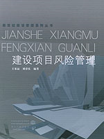
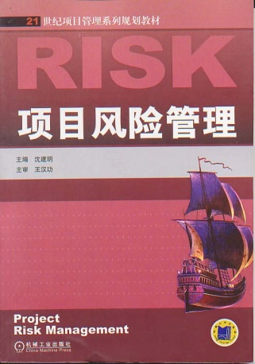
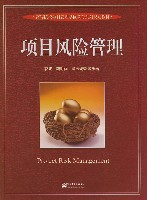

（1）王家远，刘春乐.<<建设项目风险管理>>，新世纪建设管理系列从书，中国水利水电出版社，知识产权出版社，2004年.
（2）沈建明.<<项目风险管理>>，21世纪项目管理系列规划教材，机械工业出版社，2014年.
（3）郭波，龚时雨，谭云涛.<<项目风险管理>>，高教院校项目管理学位教育系列规划教材，电子工业出版社，2008年.
学院图书馆面积460平米，专业图书资料齐全，现有土木建筑类中文藏书3万册，外文藏书6235册，中文期刊160余种，外文期刊110余种。
学院的教学实验中心下设基础力学实验室、测量实验室、建材实验室、结构实验室和土木工程仿真实验室等，其中建材实验室被广东省建委评为一级实验室并通过了国家实验室认证。充足的实验室面积和设备仪器，完全能够满足本科教学的要求。
实习基地建设卓有成效，现在已经有固定的实践教学基地2个，各实习基地均给同学们带来了很好的实习效果。
本课程已使用学院的Blackboard网络教学平台。《工程项目风险》课程网站。该课件界面功能包括教材主要章节、教学大纲与讲义、实习图片、重点难点问题、其他教学过程和文件等，由本团队自行编制，已经运行4年。